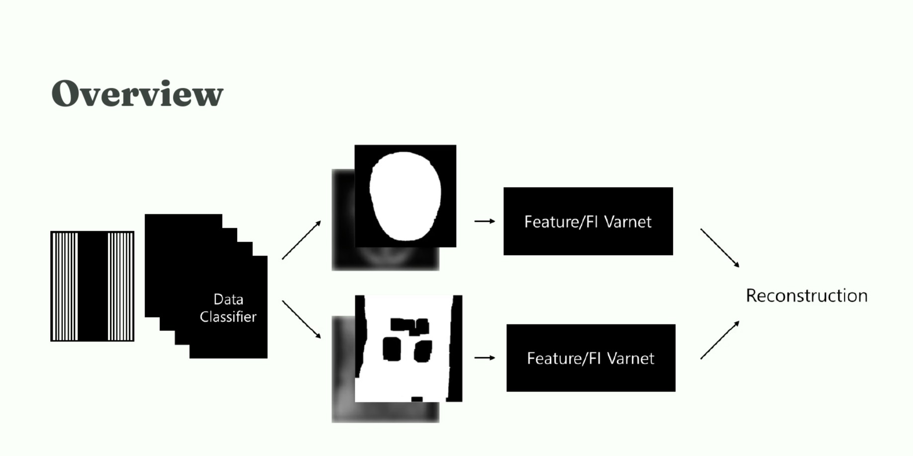

SNU FastMRI Challenge · Team 2rm1000 · 2025
Accelerated MRI Reconstruction
3rd PlaceReconstructing brain and knee MRI from undersampled k-space using specialized VarNet models, data augmentation, checkpoint averaging, and ensembling.

- Final placement
- 3rd
- Team prize
- ₩2.5M
- Acceleration settings
- 4× / 8×
The reconstruction problem
Accelerating MRI acquisition requires reconstructing images from incomplete frequency-domain measurements. Our team worked with brain and knee data at 4× and 8× acceleration in the 2025 SNU FastMRI Challenge.
Our approach
We combined Feature VarNet and FI VarNet with expert models specialized by anatomy and acceleration setting. The training pipeline included MRI-aware augmentation, and the final reconstruction pipeline used checkpoint averaging and ensembling to improve stability.
Outcome
Team 2rm1000 placed third and received a team prize of KRW 2,500,000. The repository documents training, reconstruction, and evaluation for the submission.
Inside the project